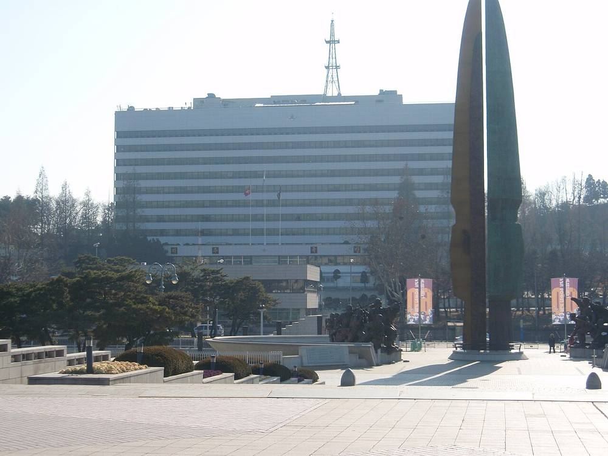
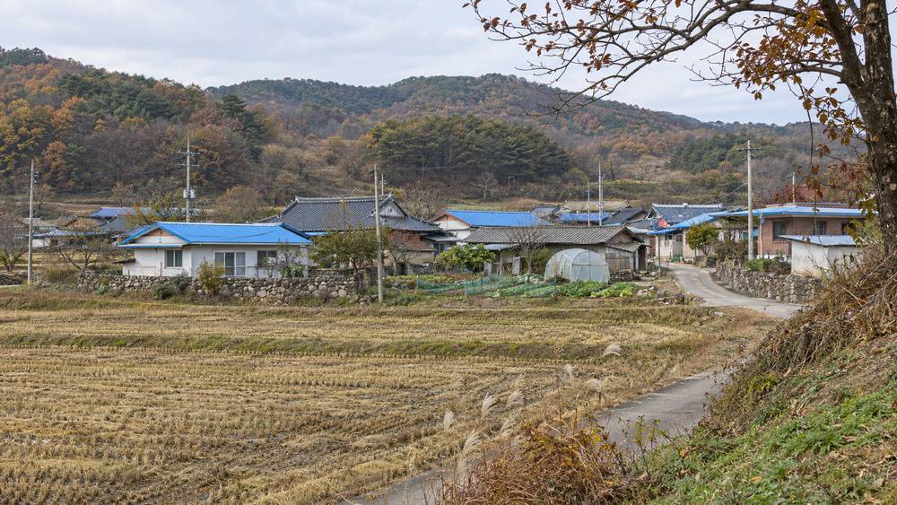
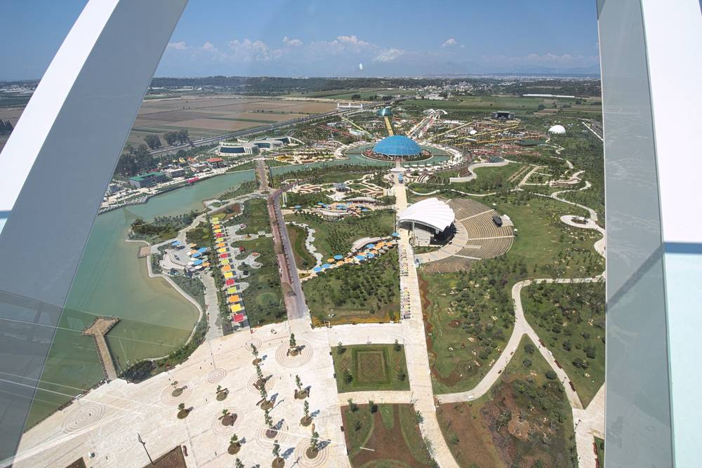
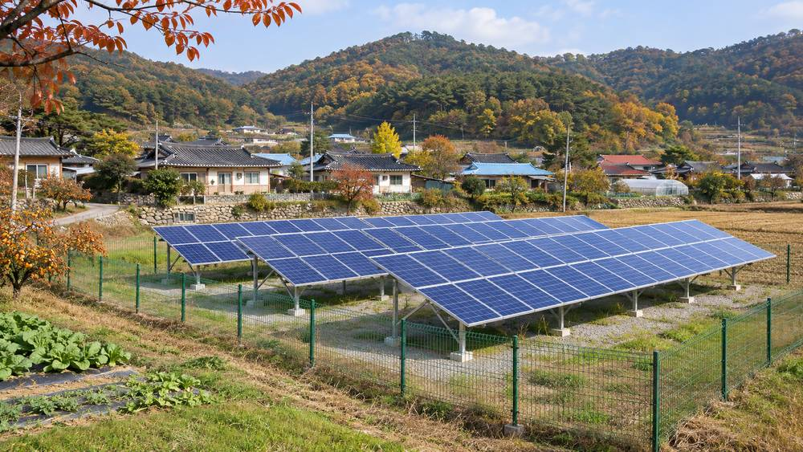
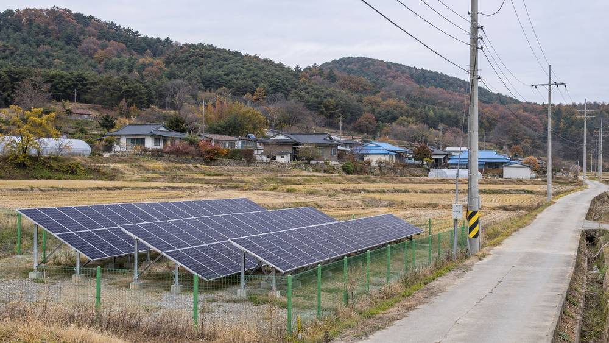
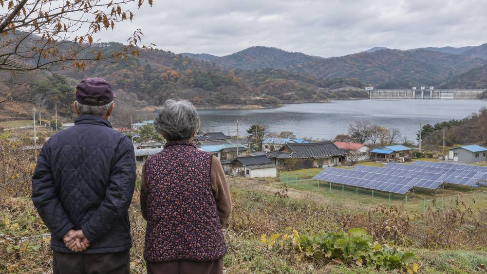

정책
산단 입주기업, 공장 다 짓기 전에도 지붕·유휴부지 태양광 임대 가능하게…이언주 의원 산업집적법 개정안 발의
산단 태양광 약 2.1GW로 2030년 목표 6GW의 35% 수준…설계 단계부터 태양광 반영해 민간 투자 끌어낸다는 취지, 계통 접속·계약 책임은 과제

경기도, 농식품부 '농지 특별조치법안' 설명회서 "영농 목적 취득과 투기 가를 기준 만들라" 건의
17일 경기남부·19일 경기북부 수도권 설명회에 약 400명…토지거래허가구역 농지 처분명령 대상 조정·기존 농업인 경과조치 요청

국방부 첫 '국방 에너지 전환 계획'…4개 분야 12개 과제 내놨지만 재원·일정은 빠져
레이저 무기 전력 수요 대비 마이크로그리드·임무필수부하 도입…장성 상무대 태양광 3,015kW·ESS 9.76MWh 실증, 에너지 자립률은 16.1%

통신 '최적요금제 안내' 법 시행 한 달 넘도록 공회전…고지 주기 놓고 정부·통신 3사 이견
과기정통부 6개월마다 안 vs 통신사 주기 연장 요구…"늦어도 올해 안 첫 고지"

법제연구원 "1,000조 원 K-GX, 기업 탈탄소 뒷받침할 법이 없다"…탄소중립산업법 제정 제언
현행 탄소중립기본법엔 재정·세제·금융 지원 근거 부족…EU 2024년 NZIA, 일본 2023년 GX추진법과 비교

오피스텔·상가 분양계약 '경미한 위반 해지' 막는 건분법 시행령, 연내 시행 어려워
6월 입법예고 뒤 국무조정실 규제 심의 지연…국토부 "내년 중 가능", 업계는 기획소송 늘어 혼란 호소

공공기관 냉방 26℃·난방 20℃로 기준 2℃씩 완화 추진…기후부, 23일까지 의견 받아
'공공기관 에너지이용 합리화 규정' 개정안 행정예고…비전기식 냉난방설비 온도 완화 특례는 없애

정부, 국회와 전기차 국내생산세액공제 논의 본격화…중국산 점유율 43.5%로 급등
올해 1~9월 중국산 승용 전기차 11만2,417대로 2.2배…산업부는 '시급', 세정 당국은 '신중'

읍·면·동장 뽑을 때 주민심사단 평가 반영…행안부 '주민선택 임용제' 내년 시범, 2027년 7월 첫 임용
주민자치회가 신청하면 공모형·개방형 중 선택…임기 2년, 한 차례 연임 가능

수도권 데이터센터, 전력계통영향평가 통과 기준 70→75점…16일부터 고시 시행
기후부 '전력이용밀도' 항목 새로 넣고 전기 풍부한 지역은 가점…시범운영 신청 비수도권 7GW·수도권 1.9GW

가상자산 매매·중개업도 기업부설연구소 인정 추진…과기정통부, 시행령 개정안 입법예고
2020년부터 유흥·사행성 업종과 함께 제외…인정되면 세액공제·국가R&D 가점 받을 수 있어
배달앱 수수료 '할인 전 금액' 기준 바뀌나…배민 배달팁 할인도 제외, 쿠팡이츠는 공정위 시정명령 이행 남아
배민 "점주 수수료 절감 연 1,100억 원"…공정위, 쿠팡이츠에 60일 안 약관 시정 명령
경기도 공공 'RE101' 달성 발표, 실제 재생에너지 발전량은 전력사용량의 14% 수준
안계명 경기도의원 행정사무감사 지적…"설비용량 기준 달성률과 실제 발전량 따로 공개해야"

수능 나흘 앞 'AI 스마트안경' 부정행위 우려…수능장엔 전문 탐지장비 없어
국가자격시험은 감독 장비·인력 예산 65억7,300만 원 증액 추진…국회 국민동의청원도 공개 요건 넘겨
대통령 "적대적 M&A 걸림돌 전수조사"…대주주 지분 과다 상장사 퇴출 기준 검토 주문
한국거래소 정책간담회, 의무공개매수 '50%+1주냐 100%냐' 맞서…금융위 "상장 분산 요건 검토"

기후시민회의, 7개월 토의 끝에 정부 정책 권고안 70건 확정…자원순환 28건·교육·참여 23건·기업 감축 19건
국가기후위기대응위원회, 광주과학기술원서 9차 회의…12월 전체회의 상정 뒤 5대 원칙 검토 거쳐 정책 반영

농어촌 기본소득 공모 추천 못 받은 거창·하동, 자체 재원으로 기본소득 추진
경남도, 9개 군 중 산청만 추천…거창은 조례 가결, 하동은 월 5만 원 선불카드 조례 개정 입법예고

등기부 열람 700원→1,100원…법원행정처, 25년 만에 등기 수수료 400원씩 인상 추진
방문 발급 1,200원→1,600원·인터넷 발급 1,000원→1,400원…공인중개사 500명 국회 앞 반대 집회, 청원 5만 명 넘어

쓰지 않은 카드포인트 2조1,000억 원, 2027년 5월부터 지역화폐로 바꿔 쓴다
어카운트인포·지역화폐 앱에서 신청하면 다음 날 사용…KTX 마일리지·탄소중립포인트도 전환 검토

한파 취약사업장 3만여 곳 집중 관리…새벽 옥외작업 시간 조정 지도, 집중점검 600곳으로 3배
고용노동부, 15일부터 내년 3월 15일까지 한파 안전 대책기간…환경미화 노동자에 방한용품 1만4,300세트, 이주노동자에 외국어 안내서

2027년 농어촌 기본소득 시범사업 신규 공모에 34개 군 신청…경쟁률 1.9대 1
국비 비율 50%로 10%p 올려 공모…11월 19일께 18개 군 안팎 잠정 발표, 최종 선정은 국회 예산 확정 뒤

석유 최고가격 5회 연속 동결…휘발유 1,784원·경유 1,773원 12월 11일까지
정부 "물가 안정 효과 확인"…정유사 손실 보전에 예비비 4조2,000억 원, 종료 시점은 미정

공공건축물 그린리모델링 의무화 앞두고 제외 대상 정한다…국방·문화유산·안전등급 D 이하 등
국토부, 녹색건축물법 시행령 개정안 12월 22일까지 입법예고…2027년 3월 9일 의무화와 함께 시행

한성숙 총리 "좋은 지방정부 정책 전국으로"…신안 이익공유제·영광 햇빛·바람 기본소득 대표 사례로 꼽아
국회 '참좋은 지방자치 정책대회' 축사서 "햇빛소득마을과 함께 확대"…19개 지방정부 성과 발표

산불·산사태 우려 땐 시·군·구가 주민대피계획 의무 수립…산불 과태료 상한 300만 원으로
산림청, 산림재난방지법 시행령 개정 시행…국가중요시설·문화유산 주변 위험 나무 제거 근거도


제주도, COP31서 '2035 탄소중립' 제시…"재생에너지 수익을 주민소득·지역복지로"
튀르키예 안탈리아서 4년 연속 제주세션…기후시민회의·V2G·ESS로 시민 에너지시장 참여 넓힌다

영농형 태양광법 12월 17일 시행 앞두고…농식품부 "외지인 '알박기' 막게 한 사람 몫에 상한"
임차농은 사업 기간 계약 자동 갱신·임차료 인상 5% 제한, 표준 임대차계약서 내년 보급

영농형 태양광, 어떤 작물 위에 농가당 얼마까지?…농식품부 고시 11월 말 행정예고
12월 17일 법 시행 앞두고 재배작물·발전용량 상한 조율 중…업계 "200kW 돌려도 농업소득 평균 수준"

햇빛소득마을 태양광 부지, 재산세 분리과세 대상에 넣는다…행안부 지방세법 시행령 개정안, 2027년 1월 시행
주민 협동조합·사회적협동조합이 행안부 선정 태양광 사업에 쓰는 토지 대상…2030년까지 적용

다음 달 17일 시행 영농형 태양광법, 한 사람 발전 용량에 상한…임차농엔 계약 자동 갱신·임차료 인상 5% 제한
농식품부, 외지인 계통 '알박기' 막으려 상한 두고 시행령·고시 마련 중…표준 임대차계약서 내년 보급, 금융·전력 단가 지원은 협의 과제로 남아

재생에너지 100GW 목표 5대 과제 중 '초록불' 하나도 없어…기후솔루션 "화석연료 특권·망 중립성은 빨간불"
12일 '100GW 신호등' 공개, 보급은 47.2GW로 절반 못 미쳐…허가 해상풍력 36GW 중 지어진 건 1%, 영농형 태양광 지구 지정도 아직 없어

햇빛소득마을 523곳 뽑았지만 바로 시작할 수 있는 곳은 36곳…예정처 "새 마을 늘리기보다 선정 마을 사업화부터"
1차 선정 87곳 중 즉시 추진 13곳, 6개월 보완 조건 채운 곳은 4곳뿐…행안부 "계통만 풀리면 130~140곳 바로 착수"

"2030년까지 지붕 태양광 3억 가구"…방글라데시·케냐·나이지리아 등 '세계 지붕 태양광 선언' 동참
호주가 먼저 지지한 선언에 인니 국영전력 PLN·21개국 의원 34명도…인허가 간소화·가계 금융 등 촉구

반도체 용수 위해 동복댐 키우면 280가구 수몰…기후부 장관 "직접 연금은 어렵다, 주민 태양광 협동조합 '햇빛연금'은 설계 가능"
이주 예정 주민 대책위, 월 150만~200만 원 상생연금 등 6가지 요구…용수 단가 인상엔 "전국 물값 오른다"며 선 그어


영농형 태양광법 시행 한 달 앞인데…영양변전소 준공 2년 6개월 늦어져 농민들 "전기 보낼 길 없다"
154kV 영양변전소 2027년 6월에서 2029년 12월 말(전기 공급 기준)로 미뤄져…약 29㎞ 송전선로·송전탑 약 76기는 아직 착공 못 해

政策
産業団地の入居企業、工場完成前でも屋根・遊休地を太陽光向けに賃貸可能に…李彦周議員が産業集積法改正案を発議
産業団地の太陽光は約2.1GWで2030年目標6GWの35%水準…設計段階から太陽光を反映し民間投資を呼び込む狙い、系統接続・契約責任は課題
国防部初の「国防エネルギー転換計画」…4分野12課題を示すも財源・日程は示さず
レーザー兵器の電力需要に備えマイクログリッド・任務必須負荷を導入…長城・尚武台で太陽光3,015kW・ESS 9.76MWhを実証、エネルギー自立率は16.1%
法制研究院「1,000兆ウォンのK-GX、企業の脱炭素を支える法がない」…炭素中立産業法の制定を提言
現行の炭素中立基本法には財政・税制・金融支援の根拠が不足…EUの2024年NZIA、日本の2023年GX推進法と比較
首都圏データセンター、電力系統影響評価の合格基準を70→75点に…16日から告示施行
気候エネルギー環境部、「電力利用密度」項目を新設し電力が豊富な地域には加点…試行期間の申請は非首都圏7GW・首都圏1.9GW
韓成淑首相「優れた自治体政策を全国へ」…新安の利益共有制・霊光の太陽光・風力ベーシックインカムを代表例に
国会「参よい地方自治政策大会」の祝辞で「太陽光所得村とともに拡大」…19自治体が成果発表
済州道、COP31で「2035年カーボンニュートラル」を提示…「再エネ収益を住民所得・地域福祉へ」
トルコ・アンタルヤで4年連続の済州セッション…気候市民会議・V2G・ESSで市民のエネルギー市場参加を拡大
営農型太陽光、どの作物の上に農家1戸あたりどこまで？…韓国農林畜産食品部、告示案を11月末に行政予告
12月17日の法施行を前に栽培作物・発電容量上限を調整中…業界「200kWでも農業所得の平均程度」
「日差し所得村」の太陽光用地、財産税の分離課税対象に…韓国行政安全部が地方税法施行令改正案、2027年1月施行
住民の協同組合・社会的協同組合が行政安全部選定の太陽光事業に使う土地が対象…2030年まで適用
来月17日施行の営農型太陽光法、1人当たりの発電容量に上限…小作農には契約の自動更新・賃料引き上げ5%制限
農林畜産食品部、よそ者による系統の「先取り」を防ぐため上限を設け施行令・告示を準備中…標準賃貸借契約書を来年普及、金融・電力単価の支援は協議課題として残る
再エネ100GW目標の5大課題、「青信号」は一つもなし…気候ソリューション「化石燃料の特権・送電網の中立性は赤信号」
12日に「100GW信号機」を公開、導入量は47.2GWで半分に届かず…許可済み洋上風力36GWのうち建設は1%、営農型太陽光の地区指定もまだなし
「日差し所得村」523カ所を選んだが、すぐ始められるのは36カ所…国会予算政策処「新たな村を増やすより選定済みの村の事業化を」
1次選定87カ所のうち即時推進は13カ所、6カ月の補完条件を満たしたのは4カ所のみ…行政安全部「系統さえ解決すれば130～140カ所がすぐ着工」
「2030年までに屋根置き太陽光3億世帯」…バングラデシュ・ケニア・ナイジェリアなどが「世界屋根置き太陽光宣言」に参加
豪州が最初に支持した宣言にインドネシア国営電力PLN、21カ国の議員34人も…許認可簡素化・家計向け金融などを要求
半導体の用水確保へ同福ダムを拡張、280世帯が水没…気候エネルギー環境相「直接の年金は困難、住民の太陽光協同組合による『太陽光年金』なら設計可能」
移転予定住民の対策委は月150万〜200万ウォンの共生年金など6項目を要求…用水単価の引き上げには「全国の水道料金が上がる」と否定
営農型太陽光法の施行まで1カ月なのに…英陽変電所の完成が2年6カ月遅れ、農家「電気を送る道がない」
154kV英陽変電所は2027年6月から2029年12月末（送電開始基準）に延期…約29kmの送電線と鉄塔約76基は未着工
政策
产业园区入驻企业工厂建成前也可出租屋顶和闲置用地发展太阳能…李彦周议员提出产业集聚法修正案
产业园区太阳能约2.1GW，仅为2030年目标6GW的35%…旨在从设计阶段纳入太阳能吸引民间投资，并网与合同责任仍是课题
韩国国防部首份“国防能源转型计划”…提出4个领域12项课题，但未公布资金与时间表
为应对激光武器用电需求引入微电网和“任务必需负荷”…长城尚武台实证光伏3,015kW、储能9.76MWh，能源自给率仅16.1%
韩国法制研究院：“1,000万亿韩元K-GX缺少支撑企业脱碳的法律”…建议制定碳中和产业法
现行碳中和基本法缺乏财政、税收和金融支持依据…对比欧盟2024年《净零工业法案》与日本2023年《GX推进法》
韩国农光互补法下月17日施行：限制个人发电容量上限…租地农民享合同自动续期、租金涨幅限5%
农林畜产食品部为防止外地人"抢占"电网容量设定上限，正在制定施行令和告示…标准租赁合同明年推广，金融与电价支持仍待协商
韩国可再生能源100GW目标五大课题无一"绿灯"…气候解决方案："化石燃料特权、电网中立性亮红灯"
12日公布"100GW信号灯"，装机47.2GW不足一半…已获许可海上风电36GW仅建成1%，农光互补园区也尚无指定案例
韩国"阳光收入村"已选523个，能立即启动的仅36个…国会预算政策处："与其增加新村，不如先推动已选村落落地"
首批87个村中可立即推进的13个，6个月内满足补充条件的仅4个…行政安全部："电网问题一解决，130至140个村可马上开工"
“2030年前实现3亿户屋顶太阳能”…孟加拉国、肯尼亚、尼日利亚等加入《全球屋顶太阳能宣言》
澳大利亚率先支持的宣言获印尼国家电力公司PLN及21国34名议员支持…呼吁简化审批、提供家庭融资
为保障半导体用水扩建同福水库，280户将被淹没；气候部长官称"难以直接发放年金，但可设计居民光伏合作社'阳光年金'"
拟搬迁居民对策委提出每月150万至200万韩元共生年金等6项要求；对提高供水单价，长官以"全国水费都会上涨"为由予以拒绝
农光互补法实施仅剩一个月…英阳变电站竣工推迟2年6个月，农民：“电送不出去”
154kV英阳变电站由2027年6月推迟至2029年12月底（按供电基准）…约29公里输电线路与约76座输电塔尚未开工
Policy
Bill would let industrial-park tenants lease roofs and idle land for solar before factories are finished
Industrial-park solar stands at about 2.1GW, roughly 35% of the 6GW goal for 2030; the aim is to draw private investment by designing solar in from the start, but grid access and contract liability remain open questions
Defense ministry unveils first energy transition plan with 12 tasks in four areas, but no budget or timeline
Microgrids and "mission-critical load" concept to power laser weapons; Sangmudae pilot in Jangseong pairs 3,015kW of solar with 9.76MWh of storage but reaches only 16.1% self-sufficiency
Legal research institute says Korea's ₩1,000 trillion K-GX plan lacks a law to back corporate decarbonization
Current Carbon Neutrality Act offers no clear basis for fiscal, tax and financial support, report says, pointing to the EU's 2024 NZIA and Japan's 2023 GX Promotion Act
Public buildings may cool to 26°C and heat to 20°C as ministry eases limits by 2 degrees
Draft amendment to public-sector energy efficiency rules posted for comment until the 23rd; special allowance for non-electric HVAC to be scrapped
Seoul-area data centers face higher grid impact bar, 70 to 75 points, from Nov. 16
Climate ministry adds 'power use density' item and rewards power-rich regions; pilot applications totaled 7GW outside the capital area vs 1.9GW inside
Gyeonggi's 'RE101' public-sector claim rests on capacity; actual renewable output covers about 14% of use
Provincial councillor Ahn Gye-myeong says achievement rates by capacity and actual generation should be published separately
PM Han: good local policies should go nationwide — cites Sinan's profit-sharing and Yeonggwang's solar-wind basic income
Speaking at a National Assembly local-government policy contest, she said they are spreading alongside the solar income village programme
Jeju presents 2035 carbon-neutral goal at COP31, pledges to return renewable profits to residents
Fourth straight Jeju session, held in Antalya, highlights a climate citizens' assembly and V2G and battery storage to bring citizens into the power market
Ahead of Korea's agrivoltaics act on Dec. 17, farm ministry plans per-person capacity cap to stop outside 'land-grabbing'
Tenant farmers get automatic lease renewal and a 5% cap on rent increases; a standard lease form will be issued next year
Korea's farm ministry to unveil crop list and per-farm caps for agrivoltaics by end of November
Rules being finalised ahead of the Dec. 17 law; industry says even 200kW yields only an average farm income
Korea to tax Sunlight Income Village solar land separately for property tax, from January 2027
Applies to land that local residents' cooperatives use for solar projects selected by the interior ministry, through 2030
Korea's Agrivoltaics Act, Taking Effect Dec. 17, Caps Each Person's Generating Capacity and Gives Tenant Farmers Automatic Lease Renewal With Rent Increases Capped at 5%
Agriculture ministry drafting decrees with a cap to stop outsiders 'squatting' on grid capacity; standard lease to be rolled out next year, while financing and power price support remain under discussion
None of Five Key Tasks for Korea's 100GW Renewables Goal Gets a 'Green Light,' Climate Group Says, With Fossil Fuel Privileges and Grid Neutrality Flashing Red
Climate Solutions launches '100GW traffic light' on the 12th: capacity at 47.2GW, under half the goal; only 1% of 36GW of permitted offshore wind built, and no agrivoltaic zone designated yet
Only 36 of Korea's 523 Selected "Sunlight Income Villages" Can Start Right Away, Assembly Budget Office Says, Urging Focus on Delivery Over New Selections
Of 87 first-round villages, 13 are ready to go and only 4 met conditions within the six-month grace period; ministry says 130 to 140 could start once grid issues are solved
Bangladesh, Kenya, Nigeria and others join Global Rooftop Solar Declaration for 300 million solar homes by 2030
Declaration first backed by Australia also endorsed by Indonesia's PLN and 34 MPs from 21 countries; calls for simpler permits and household finance
Expanding Dongbok Dam for chip-plant water will flood 280 households; climate minister says a direct pension is not possible but a residents' solar co-op "sunlight pension" can be designed
Residents' committee seeks six measures including a monthly co-existence pension of 1.5 million to 2 million won; minister rejects higher water prices, saying it would raise bills nationwide
Agrivoltaics Law Takes Effect in a Month, but Yeongyang Substation Delayed by Two and a Half Years: Farmers Say 'No Way to Send the Power'
The 154kV Yeongyang substation has slipped from June 2027 to the end of December 2029 for power supply, and construction of a roughly 29km transmission line and some 76 pylons has yet to begin